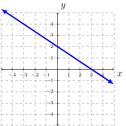

Section 2.5
Consider a fixed point on a line and call it \((x_1,y_1)\). Next, consider any other point on the line and call it \((x,y)\). Then the slope of the line would be:
The equivalent equation would be: \(y-y_1=m(x-x_1)\); provided \((x,y)\) is not the fixed point. This leads to the point-slope form equation of a line.
Point-Slope Form
Definition 14 (Point-Slope Form)
The point-slope form of the equation of a line with a slope of \(m\) and a point \((x_1,y_1)\) is
Examples
Example 28
Write the equation of a line passing through the point \((-4,1)\) and a slope of \(3\). Finish the equation in slope-intercept form (\(y=mx+b\)).
Solution:
We are given \((x_1,y_1)=(-4,1)\) and \(m=3\). Plugging these values into the point-slope form equation we have:
Now, solve for \(y\) to get into slope-intercept form
Therefore, the equation of the line passing through \((-4,1)\) and having a slope of \(3\) is: \(y=3x+13\).
Example 29
Write the equation of the line passing through the points \((-4,3)\) and \((5,-1)\). Finish the equation in slope-intercept form (\(y=mx+b\)).
Solution:
We are given \((x_1,y_1)=(-4,3)\) and \((x_2,y_2)=(5,-1)\). To find the equation of the line we must first find the slope of the line. Using \(m=\frac{y_2-y_1}{x_2-x_1}\) we have
Next, we pick one of the two points, \((-4,3)\), and use \(m=-\frac{4}{9}\) to find the equation of the line:
Therefore, the equation of the line is \(y=-\frac{4}{9}x+\frac{11}{9}\).
Example 30
Given the following graph. Find the equation of the line. 
Solution:
One way to find the equation of the line is to have two points, find the slope, plug the point and slope into the point-slope, and then solve for \(y\). Given the graph, we have many points to choose from. However, two points are clearly on the line: \((0,2)\) and \((3,0)\). We will use these points to find the equation of the line. First, we will find the slope:
Using the point \((0,2)\) and slope \(m=-\frac{2}{3}\) we have:
Therefore, the equation of the graphed line is: \(y=-\frac{2}{3}x+2\).
Horizontal and Vertical Lines
Definition 15 (Vertical and Horizontal Lines)
An equation of the vertical line through the point \((a,b)\) is \(x=a\).
An equation of the horizontal line through the point \((a,b)\) is \(y=b\).
Parallel and Perpendicular Lines
Definition 16 (Parallel and Perpendicular Lines)
Two distinct nonvertical lines are parallel if and only if they have the same slope.
Two lines, neither of which is vertical, are perpendicular if and only if their slopes have a product of \(-1\).
It is common to say if the slope of line one is \(m_1\), then the slope of the perpendicular line is the opposite reciprocal. That is, \(m_2=\frac{1}{m_2}\).
Examples
Example 31
Let line one be \(y=3x+10\).
if line two is parallel to line one, then the slope of line two would be \(m=3\).
if line two is perpendicular to line one, then the slope of line two would be \(m=-\frac{1}{3}\).
Example 32
Write an equation in slope-intercept form of the line that passes through the point \((2,-4)\) and satisfies the given conditions.
Parallel to the line \(3x-2y=5\).
Solution:
To construct a line equation we need a point and a slope. We know the point is \((2,-4)\). Next, we need to find the slope of the new line.
The slope of the old line is unknown as the equation is given. We must first find the slope-intercept form of the equation given to find the slope of the old line.
From this, we see the slope of the old line is \(m=\frac{3}{2}\). This means the slope of the new line, parallel to the old line, must be \(m=\frac{3}{2}\).
Since, we have \((x_1,y_1)=(2,-4)\) and \(m=\frac{3}{2}\) we can now find the equation of the line.
Therefore, the equation of the line parallel to \(3x-2y=5\) and passes through the point \((2,-4)\) is \(y=\frac{3}{2}x-7\).
Perpendicular to the line \(3x-2y=5\).
Solution:
Given: \((x_1,y_1)=(2,-4)\)
Since \(3x-2y=5\) can be written as \(y=\frac{3}{2}x-7\) we know the slope of the old line is \(m=\frac{3}{2}\).
The slope of the new line is \(m=-\frac{2}{3}\) since the slope of the old line was \(m=\frac{3}{2}\).
All together we have:
Therefore, the equation of the line perpendicular to \(3x-2y=5\) and passes through the point \((2,-4)\) is \(y=-\frac{2}{3}x-\frac{8}{3}\).